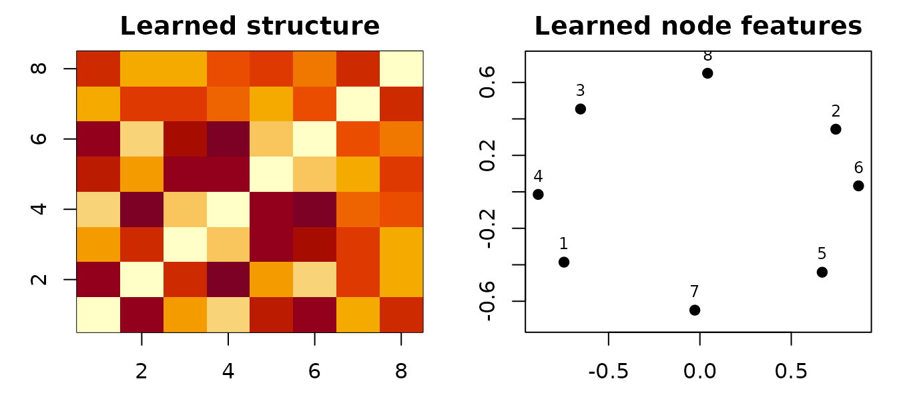

A GW barycenter summarizes several weighted structures with a new, fixed-size structure. An FGW barycenter can also summarize node features. The inputs may contain different numbers of nodes because the solver learns a coupling from each sample to the shared barycenter.
This vignette combines three related point-cloud shapes into an eight-node template. You will obtain its structure matrix, feature matrix, weights, and one coupling per input sample.
What does each sample contain?
Each sample needs a square structure matrix C and a
feature matrix F with one row per node. Here,
C contains normalized pairwise distances, while
F contains two measured attributes. All feature matrices
must have the same number of columns.
make_sample <- function(n, phase, seed) {
set.seed(seed)
angle <- seq(0, 2 * pi, length.out = n + 1)[-(n + 1)] + phase
xy <- cbind(cos(angle), 0.7 * sin(angle))
xy <- xy + matrix(rnorm(2 * n, sd = 0.04), ncol = 2)
C <- as.matrix(dist(xy))
C <- C / max(C)
F <- cbind(horizontal = xy[, 1], vertical = xy[, 2])
list(C = C, F = F)
}
samples <- list(
make_sample(8, 0.00, 1),
make_sample(10, 0.12, 2),
make_sample(9, -0.10, 3)
)
Cs <- lapply(samples, `[[`, "C")
Ys <- lapply(samples, `[[`, "F")
data.frame(
sample = seq_along(samples),
nodes = vapply(Cs, nrow, integer(1)),
features = vapply(Ys, ncol, integer(1))
)
#> sample nodes features
#> 1 1 8 2
#> 2 2 10 2
#> 3 3 9 2Structure and feature scales affect the optimization. In this example
the structures are scaled to [0, 1]; the default
feature-cost normalization also scales each cross-feature cost before
solving.
How do you fit an FGW barycenter?
fgw_barycenters() alternates between FGW couplings and
closed-form updates of the barycenter. N sets the output
size, not the size of any particular sample.
bary <- fgw_barycenters(
N = 8, Ys = Ys, Cs = Cs,
alpha = 0.5, epsilon = 0.08,
max_iter = 30L, tol = 1e-4, random_state = 42
)
data.frame(
status = bary$status,
converged = bary$converged,
nodes = nrow(bary$C),
features = ncol(bary$X),
iterations = bary$iterations,
final_update = bary$error,
objective = bary$objective
)
#> status converged nodes features iterations final_update objective
#> 1 converged TRUE 8 2 29 8.705077e-05 0.08389649
data.frame(
sample = seq_along(bary$solver_diagnostics),
status = vapply(bary$solver_diagnostics, `[[`, character(1), "status"),
inner_status = vapply(
bary$solver_diagnostics, `[[`, character(1), "inner_status"
),
max_inner_residual = vapply(
bary$solver_diagnostics, `[[`, numeric(1), "max_inner_residual"
)
)
#> sample status inner_status max_inner_residual
#> 1 1 converged converged 6.950018e-10
#> 2 2 converged converged 9.098079e-10
#> 3 3 converged converged 6.315681e-10bary$C is the learned 8 x 8 structure and
bary$X is the learned 8 x 2 feature matrix.
error is the final update magnitude, not a proof of global
optimality. Barycenter optimization is non-convex, so inspect the
history and consider multiple initializations when the result
matters.
The heat map below shows the learned pairwise structure; the feature panel places the same eight barycenter nodes in their learned feature coordinates.

The off-diagonal variation in C and the spread of
X show that neither learned component has collapsed to a
constant.
What do the couplings mean?
The ith coupling maps barycenter nodes (rows) to nodes
of sample i (columns). Its marginals reproduce the
barycenter and sample weights.
data.frame(
sample = seq_along(Cs),
rows = vapply(bary$couplings, nrow, integer(1)),
columns = vapply(bary$couplings, ncol, integer(1)),
transported_mass = vapply(bary$couplings, sum, numeric(1))
)
#> sample rows columns transported_mass
#> 1 1 8 8 1
#> 2 2 8 10 1
#> 3 3 8 9 1Large entries identify strong correspondences, but
which.max() is only a hard summary of a soft coupling and
can discard meaningful uncertainty.
How does alpha change the problem?
alpha weights structure relative to features:
alpha = 0 is feature-only and alpha = 1 is
structure-only. Values in between fit both. Objective values from
different alpha settings are not directly comparable
because they weight different losses.
mostly_features <- fgw_barycenters(
8, Ys, Cs, alpha = 0.2, epsilon = 0.08,
max_iter = 100L, tol = 1e-4, random_state = 42
)
mostly_structure <- fgw_barycenters(
8, Ys, Cs, alpha = 0.8, epsilon = 0.08,
max_iter = 100L, tol = 1e-4, random_state = 42
)
data.frame(
alpha = c(0.2, 0.8),
status = c(mostly_features$status, mostly_structure$status),
final_update = c(mostly_features$error, mostly_structure$error)
)
#> alpha status final_update
#> 1 0.2 converged 8.300001e-05
#> 2 0.8 converged 9.865693e-05
data.frame(
difference = c("structure matrices", "feature matrices"),
relative_change = c(
sqrt(sum((mostly_structure$C - mostly_features$C)^2)) /
sqrt(sum(mostly_features$C^2)),
sqrt(sum((mostly_structure$X - mostly_features$X)^2)) /
sqrt(sum(mostly_features$X^2))
)
)
#> difference relative_change
#> 1 structure matrices 0.1773603
#> 2 feature matrices 0.8584568Choose alpha from domain knowledge or a downstream
validation criterion, not from the smallest raw objective across
settings.
How do sample weights work?
lambdas controls how strongly each input contributes.
The values are normalized to sum to one. This is useful when samples
have unequal reliability; it is not a substitute for node weights
ps, which act within samples.
weighted <- fgw_barycenters(
8, Ys, Cs, lambdas = c(0.6, 0.25, 0.15),
alpha = 0.5, epsilon = 0.08,
max_iter = 30L, tol = 1e-4, random_state = 42
)What if the support is already fixed?
That is an ordinary linear-Wasserstein problem, not a GW barycenter.
If every input already has a meaningful cross-cost to the same support
and only the support weights are unknown, use
ot_barycenter_weights(). The returned object contains one
barycenter weight vector and one component coupling per input; it does
not learn coordinates, features, or a structure matrix.
fixed_support <- c(-1, 0, 1)
fixed_cost <- outer(
fixed_support, fixed_support,
function(x, y) (x - y)^2
)
fixed_cost <- fixed_cost / max(fixed_cost)
linear_bary <- ot_barycenter_weights(
costs = list(fixed_cost, fixed_cost),
measures = list(c(0.2, 0.5, 0.3), c(0.4, 0.2, 0.4)),
coefficients = c(0.6, 0.4),
mode = "regularized",
support_cost = fixed_cost,
epsilon = 0.1,
tol = 3e-6,
sinkhorn_tol = 1e-9
)
data.frame(
support = fixed_support,
weight = linear_bary$weights
)
#> support weight
#> 1 -1 0.2706155
#> 2 0 0.3911061
#> 3 1 0.3382784Regularized mode reports a semi-debiased product-reference-KL
Sinkhorn objective: weighted source-to-support terms minus half the
support self term. Source self terms are constant in the optimized
weights and are omitted explicitly. Exact mode instead minimizes the
weighted sum of unregularized transport costs through a joint LP; it
requires the suggested lpSolve package. Exact weights may
be zero. Regularized weights obey the reported min_weight
numerical interior. Neither objective should be compared as if it were
the GW/FGW objective above.
Which barycenter function should you use?
| Available information | Function | Returned result |
|---|---|---|
| Cross-costs to a fixed common support; optimize only its weights | ot_barycenter_weights() |
Weight vector, component transports, objective and KKT certificates |
| Structure and node features | fgw_barycenters() |
Full list with structure, features, couplings, and history |
| Structure only | entropic_gromov_barycenters() |
Structure matrix by default; full list with
log = TRUE
|
| POT-style entropic FGW interface | entropic_fused_gromov_barycenters() |
List containing features and structure; adds diagnostics with
log = TRUE
|
You can hold one part of an FGW barycenter fixed: set
fixed_structure = TRUE with init_C, or
fixed_features = TRUE with init_X. Fixing a
component changes the estimand and should reflect a substantive modeling
choice.
Where should you go next?
-
vignette("multiset-alignment")aligns each sample to a shared fixed or learned template and provides projection helpers. -
vignette("solver-guide")explains GW and FGW formulations and their diagnostics. - See
?fgw_barycentersfor initialization, inner-solver, and precision controls.